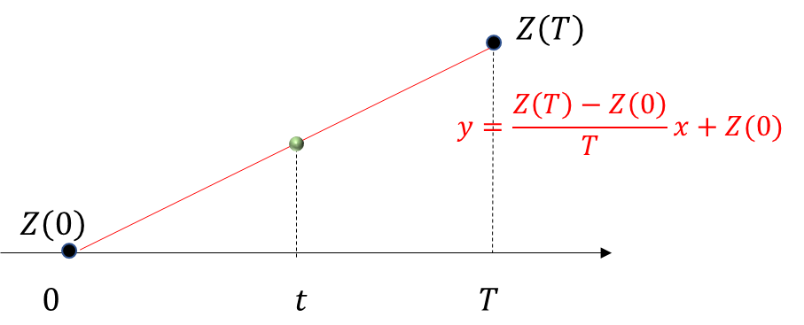

Information
Title: {BBDM: Image-to-image Translation with Brownian Bridge Diffusion Models}, {CVPR 2023}
Reference
Code: xuekt98/BBDM
Author: SeonHoon Kim
Edited by: SeonHoon Kim
Related Youtube: Youtube video
Last updated on Nov. 08, 2023
BBDM#
BBDM
BBDM 은 Brownian Bridge 를 Diffusion Model 에 도입한 최초의 모델
Image to Image Translation 분야에서 Conditional Diffusion Models 의 한계를 극복함
Stochastic Process
시간의 흐름에 따라 불확실성을 가지고 변하는 확률 변수들의 집합
Stochastic process 는 \(X_t\) 와 같이 나타낼 수 있는데,
여기서 X 는 확률 변수를,
t 는 확률 변수가 관찰된 시간을 나타냄X 와 t 는 각각 Discrete 혹은 Continuous 로 구분할 수 있음
Discrete RANDOM VARIABLE & Discrete TIME
Discrete RANDOM VARIABLE & Continuous TIME
Continuous RANDOM VARIABLE & Discrete TIME
Continuous RANDOM VARIABLE & Continuous TIME
Brownian Motion Process (Wiener Process) 소개
Brownian Motion
유체의 미소입자가 불규칙하게 운동하는 현상

Fig. 293 굴뚝에서 퍼져나간 연기 사진을 오른쪽으로 90도 회전시킨 사진#
Brownian Motion Process (Wiener Process)
Brownian Motion 을 연속 시간 확률 과정으로 모델링한 것

Fig. 294 \(W_0\) = 0 이고 max time T=1000 인 Wiener Process 를 100번 Sampling 한 결과#
Brownian Motion Process (Wiener Process) 는
Continuous RANDOM VARIABLE & Continuous TIME 를 갖는 Stochastic Process 로,
\(W_t\) 와 같이 나타낸다.
Brownian Motion Process (Wiener Process) 를 이해해보자
가정해보자
\(t = 0 → W_t = W_0 = 0\) 이라고 하자.
쉽게 이해하기 위해, TIME t 가 Discrete 하다고 가정해보자.
(BBDM 은 t 를 정수 0~1000 으로 설정)
Requirements
Brownian Motion Process 는 Stochastic Process 이다.
TIME t 마다 stochasticity 가 부여되어야 한다.시간 간격과 W 의 변화량이 비례해야 한다.
Notation

Fig. 295 Source : https://www.youtube.com/watch?v=ld0rxwAJpkM&ab_channel=finRGB#
\(\Delta t\) = 시간 간격
n = 살펴보고자 하는 시간 간격의 수
\(T = n * \Delta t\)
i.i.d \(\epsilon_t \sim N(0, 1)\)
\(\Delta W_t\) = t 시점에서 그 다음 시간 간격까지 증가한 W 의 값 \(= W_{t+\Delta t} - W_t\) = \(\epsilon_t \sqrt {\Delta t}\)
이해
\(\Delta W_t = W_{t+\Delta t} - W_t = \epsilon_t \sqrt {\Delta t}\) 라고 정의해 본 근거를 위의 Requirements 에서 찾아보면..
확률 변수 \(\epsilon\) 를 도입함으로써 stochasticity 부여
\(\Delta t\) 를 도입**함으로써 시간 간격도 고려 가능
그렇다면 왜 하필 \(\sqrt {\Delta t}\) 를 곱했을까?
\(\Delta t\) 가 0 에 가까워질 때, \(\sqrt{\Delta t}\) 는 천천히 0 에 수렴**함. 만약 TIME t 가 continuous 하다면, \(\Delta t\) 는 매우 작은 값이 됨. \(\Delta W_t = \epsilon_t {\Delta t}\) 라면 \(\Delta W_t\) 가 너무 작아짐.
\(\Delta t\) 가 커질 때, \(\sqrt{\Delta t}\) 는 천천히 커짐
주의할 사항
i.i.d \(\epsilon_t \sim N(0, 1)\) 이므로, \(\Delta W_t = \epsilon_t \sqrt {\Delta t}\) 에서 \(\Delta W_0\) 와 \(\Delta W_1\) 은 서로 독립인 것이 맞지만, \(W_0\) 과 \(W_1\) 이 독립이라는 말은 아님.
\(\Delta W_0 = \epsilon_0 \sqrt {\Delta t}\) 이므로, \(W_{\Delta t} = W_0 + \epsilon_0 \sqrt {\Delta t} = 0 + \epsilon_0 \sqrt {\Delta t} = \epsilon_0 \sqrt {\Delta t}\)
\(\Delta W_{\Delta t} = \epsilon_{\Delta t} \sqrt {\Delta t}\) 이므로, \(W_{2\Delta t} = W_{\Delta t} + \epsilon_{\Delta t} \sqrt {\Delta t} = (\epsilon_0 + \epsilon_{\Delta t}) * \sqrt {\Delta t}\)
\(Var(\Delta W_{\Delta t}) = Var(\epsilon_{\Delta t} \sqrt {\Delta t}) = Var(\epsilon_{\Delta t}) * \sqrt {\Delta t}^2 = 1 * \sqrt {\Delta t}^2 = \Delta t\)
\(\mathbb{E}(\Delta W_{\Delta t}) = \mathbb{E}(\epsilon_{\Delta t} \sqrt {\Delta t}) = \mathbb{E}(\epsilon_{\Delta t}) * \sqrt {\Delta t} = 0 * \sqrt {\Delta t} = 0\)
\(\Delta W_{T-\Delta t} = \epsilon_{T-\Delta t} \sqrt {\Delta t}\) \(W_T = (\epsilon_0 + \epsilon_{\Delta t} + \epsilon_{2\Delta t} + ... + \epsilon_{T-\Delta t}) * \sqrt {\Delta t}\)
\(\mathbb{E}(W_T) = 0\)
\(Var(W_T) = n * \Delta t = T\) (각각의 \(\epsilon\) 은 서로 i.i.d 이므로 공분산은 0)
즉, \(W_T \sim N(0,T)\)

Fig. 296 Source : https://www.youtube.com/watch?v=ld0rxwAJpkM&ab_channel=finRGB#
파란색 점들은, Brownian Motion Process 를 진행한 특정한 경우 (one representation) 를 나타냄
보라색 점처럼, W_T 는 확률에 의해 여러 경우의 수가 존재할 수 있음
Fig. 297 Source : https://www.youtube.com/watch?v=ld0rxwAJpkM&ab_channel=finRGB#
t=0 부터 t=T 까지 Wiener Process 를 수행하면,
\(W_t\) 는 \(W_T - W_0\) 만큼 변한다.\((W_T - W_0) \sim N(0, T-0)\)
\((W_{t_2}-W_{t_1}) \sim N(0,t_2-t_1)\)
ex. 5분 에서 10분으로 Wiener Process 를 진행하면, \(W_5\) 는 0 이 아닐 수 있으나, 그 변화량 \((W_{t_{10}}-W_{t_5})\) 은 N(0, 10 - 5) 를 따른다.
Linear Bridge between Standard Wiener Process
Z 가 Standard Wiener Process 라고 하자.
0 시점과 T 시점의 Z 값을 알고,
0<t<T 일 때, Z(t) 는 무엇일까?
 Fig. 298 Source : https://sine-qua-none.tistory.com/158#
가장 간단한 Bridge 는, 선형으로 연결된 Bridge 일 것
위의 Bridge 는 다음과 같이 표현할 수 있다.
\[ y={Z(T)−Z(0) \over T} x+Z(0) \]시점 t 에서의 y 값인 \(y_t\) 를 B(t) 와 같이 표현해보자.
\[ y_t = B(t)= {t\over T} Z(T) \because Z(0) = 0 \]\(B(t)\) 는 Wiener Process 일까?
그러기 위해서는,
\(W_T \sim N(0,T)\) 에 의해서,
\(Var(B(t)) = t\) 이어야 한다.분산 = 편차의 제곱의 평균 = 제곱의 평균 - 평균의 제곱
\(Var(B(t)) = \mathbb{E} ((B(t) - \mathbb{E} (B(t)))^2) = \mathbb{E} ((B(t) - 0)^2) = \mathbb{E} (B(t)^2)\) 이다.
\(Var(B(t)) = \mathbb{E} (B(t)^2) = \mathbb{E}({t^2 \over T^2} Z(T)^2) = {t^2 \over T^2} \mathbb{E}(Z(T)^2) = {t^2 \over T^2 }T = {t^2 \over T}\)
왜냐하면, \(Var(Z(T)) = \mathbb{E}(Z(T)^2) - \mathbb{E}(Z(T))^2 =\) \(\mathbb{E}(Z(T)^2)\) = T
따라서, 단순히 선형으로 연결한 Bridge 는 Wiener Process 가 될 수 없다.
Brownian Bridge 만들기
Linear Bridge 의 우변에 \(W(t)−{t\over T}W(T)\) 를 더해보자.
\(W\) 는 \(Z\) 와 독립인 새로운 Wiener Process 이다.

Fig. 299 Source : https://sine-qua-none.tistory.com/158#
위 식에는 t = 0 을 대입해도 0 이 나오고,
t = T 를 대입해도 0 이 나온다.
즉 0 의 시점과 T 의 시점을 연결하는 다리가 될 수 있다.
Brownian Bridge 의 Wiener Process 로서의 성질 증명하기
\(y_t = B(t)= {t\over T} Z(T) +W(t)−{t\over T}W(T)\)
위의 B(t) 는 Wiener Process 일까?
표준정규분포를 따르는 Z 와 W 로 이루어져 있으니 정규분포이다.
표준정규분포를 따르는 Z 와 W 의 1차 결합이므로, 평균은 0 이다.
\(Var(B(t)) = \mathbb{E}(B(t)^2) - \mathbb{E}(B(t))^2 = \mathbb{E}(B(t)^2) - 0 = \mathbb{E}(B(t)^2)\)
\(B(t)^2\) = \(({t\over T})^2 Z(T)^2\) + \(2{t\over T}Z(T)(W(t)−{t\over T}W(T))\) + \((W(t)−{t\over T}W(T))^2\)
\(\mathbb{E}(({t\over T})^2 Z(T)^2) = {t^2 \over T}\) \(\because \mathbb{E}(Z(T)^2)=T\)
\(\mathbb{E}(2{t\over T}Z(T)(W(t)−{t\over T}W(T))) = 0\) \(\because\) Z(T) 와 W 는 독립
\(\mathbb{E}((W(t)−{t\over T}W(T))^2) = \mathbb{E}(W(t)^2) - 2{t\over T}\mathbb{E}(W(t)W(T)) + {t^2\over T^2}\mathbb{E}(W(T)^2)\)
\(= t - 2{t\over T}\mathbb{E}(W(t)W(T)) + {t^2\over T}\)
\(= t - 2 {t \over T}t + {t^2 \over T}\)
\(= t - {t^2 \over T}\)
\(\because\) \(W(t)\) 와 \(W(T) - W(t)\) 는 독립이므로,
따라서,
\(Var(B(t)) = \mathbb{E}(B(t)^2) = {t^2\over T} + t - {t^2 \over T} = t\)
이므로, \(B(t)\) 는 Wiener Process 이다.

Fig. 300 \(W_0\) = 0 에서 \(W_1000\) = 123 까지 100개의 Brownian Bridge 를 샘플링한 결과#
\(T_0\) 과 \(T\) 라는 두 시점에 대하여,
\(W_0 ≠ 0\) 인 두 점 사이의 Brownian Bridge 를 만들 때는?\(T_0 ≤ t ≤ T\) 일 때, \(B(t) = Z(T_0) + {(t - T_0)\over (T - T_0)}(Z(T)-Z(T_0)) + W(t-T_0) - {(t - T_0)\over (T - T_0)}W(T - T_0)\)
아래 그림 참고
{kind=link}